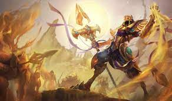

Background
League of Legends is a free-to-play multiplayer online battle arena game developed and published by Riot Games on October 27th, 2009. In the game, two teams of five fight each other in order to destroy various crystals that are laid out around the map. Each player controls unique characters known as “champions that they use to fight the opposing team and reach the objective. During a match, players can make their champions more powerful by collecting experience, earning gold, and purchasing items. In Leauge’s main game mode, “Summoner’s Rift”, a team can win the game by destroying the other team’s “Nexus” a large structure located within each team's spawn point. Each champion has a background explaining the different powers of their respective character and connects them to the lore and history of the world.

Aurelion Sol
Aurelion Sol once graced the vast emptiness of the cosmos with celestial wonders of his own devising. Now, he is forced to wield his awesome power at the behest of a space-faring empire that tricked him into servitude. Desiring a return to his star-forging ways, Aurelion Sol will drag the very stars from the sky, if he must, in order to regain his freedom.
Azir
Azir was a mortal emperor of Shurima in a far distant age, a proud man who stood at the cusp of immortality. His hubris saw him betrayed and murdered at the moment of his greatest triumph, but now, millennia later, he has been reborn as an Ascended being of immense power. With his buried city risen from the sand, Azir seeks to restore Shurima to its former glory.
Bard
A traveler from beyond the stars, Bard is an agent of serendipity who fights to maintain a balance where life can endure the indifference of chaos. Many Runeterrans sing songs that ponder his extraordinary nature, yet they all agree that the cosmic vagabond is drawn to artifacts of great magical power. Surrounded by a jubilant choir of helpful spirit meeps, it is impossible to mistake his actions as malevolent, as Bard always serves the greater good… in his own odd way.